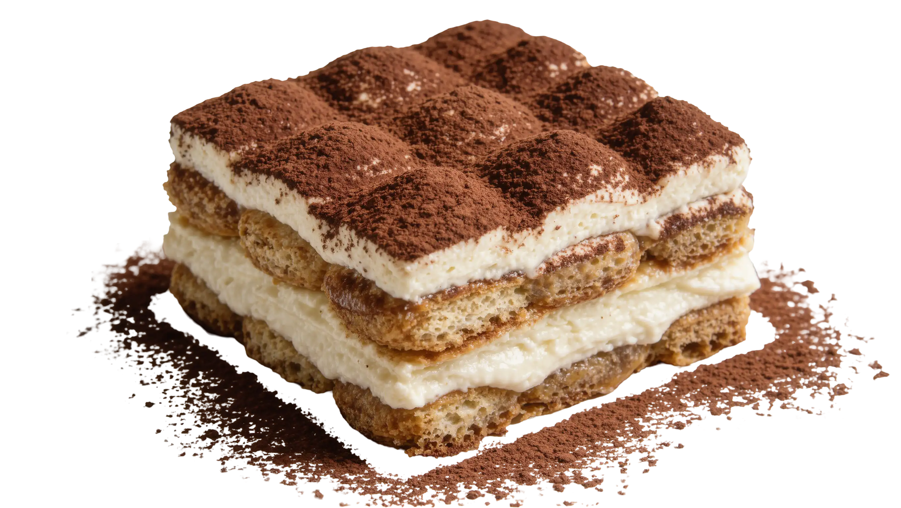

Postre
Tiramisú

Preparación
- Mezclar la crema: En un bowl bate el queso crema, el azúcar y la esencia de vainilla. Añade la crema para batir y mezcla bien hasta tener una textura firme.
- Remojar las galletas: Pasa las galletas rápidamente por el café frío sin dejarlas ablandar demasiado.
- Armar por capas: Coloca una capa de galletas en el fondo del molde y cubre con la crema preparada. Repite otra capa igual.
- Refrigerar y espolvorear: Refrigera durante al menos 2 horas y espolvorea abundante cacao en polvo encima antes de servir.
Tips de nuestra comunidad
Descubre recetas, combinaciones y secretos compartidos por otros amantes de la cocina. ¿Tienes una secreto de cocina?
Compártelo con la comunidad.
Gabriel G.
Toma bastane esfuerzo en hacerlo pero realmente vale la pena para una noche romantica o simplemente quieras algo dulce mas tarde
Karla T.
Estas van grandiosas despues de una velada elegante